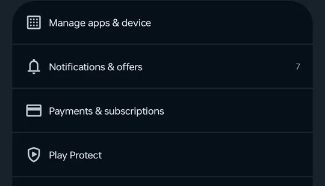
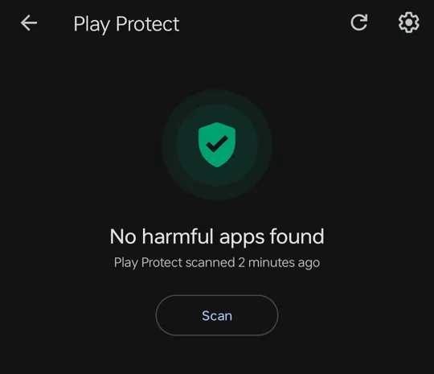
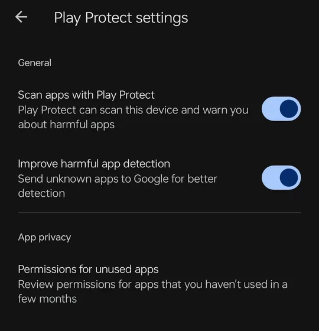
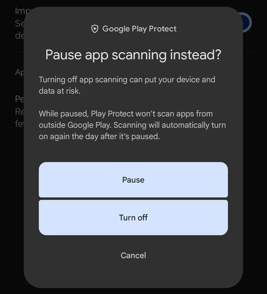
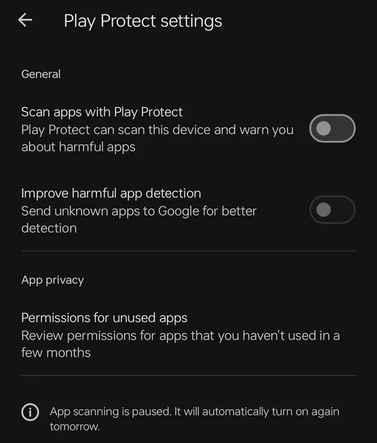

Install guide
Installing the auto-read version
On some phones, Google Play Protect blocks the auto-read version with "App blocked to protect your device". It does this because the app asks for SMS permission and does not come from the Play Store. You can still install it. Pause Play Protect's scanning, install mmogo, then switch scanning back on. It takes about two minutes.
Your data stays on your phone. mmogo has no account and no ads, and your entries and messages are never sent anywhere. The only time it uses the internet is to check for updates, and you can switch that off in Settings.
Choose Pause, never Turn off, and switch it back on afterwards. Play Protect protects you from harmful apps. Only pause it for a file you downloaded from this site, and check the SHA-256 on the install section first.
- Open the Play Store and choose Play ProtectTap your profile picture at the top right, then Play Protect.

- Tap the gear at the top rightThat opens Play Protect settings.

- Turn off "Scan apps with Play Protect"Two switches are on: Scan apps with Play Protect, and Improve harmful app detection. Tap the first one.

- Tap PauseA box asks "Pause app scanning instead?" Tap Pause. Do not tap Turn off.

- Check it says pausedOn our phone both switches now showed off, with the note "App scanning is paused. It will automatically turn on again tomorrow."

- Install mmogo auto-readDownload it from the versions section and install it the usual way (install steps). Check the SHA-256 first.
- Switch scanning back onGo back to Play Protect settings and turn on both switches again. Play Protect should switch itself on again the next day, but do not wait for that.
Your phone may use different words or a different order, especially Samsung phones. If your phone has no Pause button, tell us on GitHub (do not paste M-Pesa messages or phone numbers). The standard version needs none of this: it asks only for internet and installs without the SMS permission.